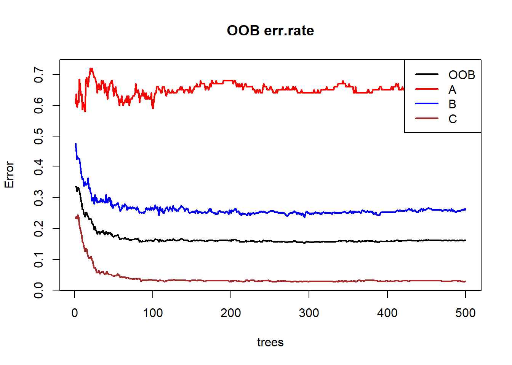
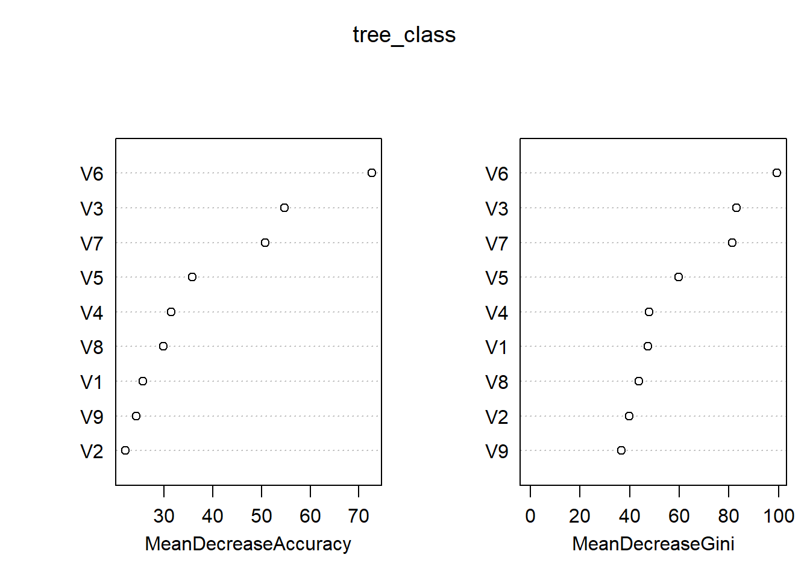
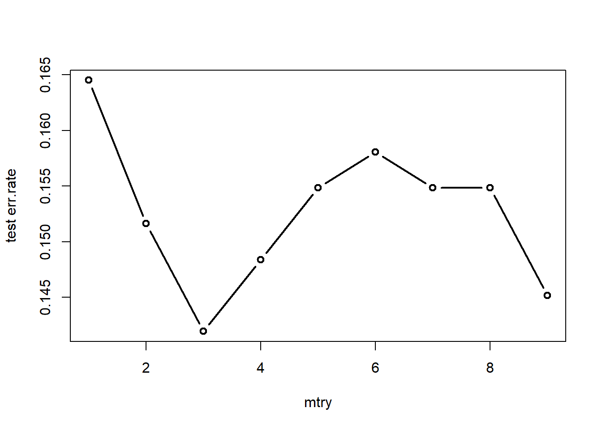
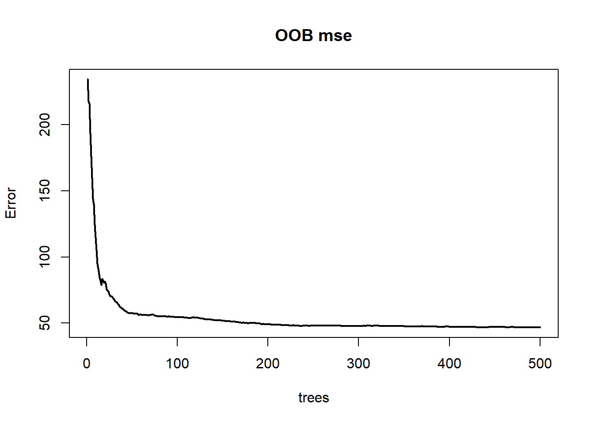
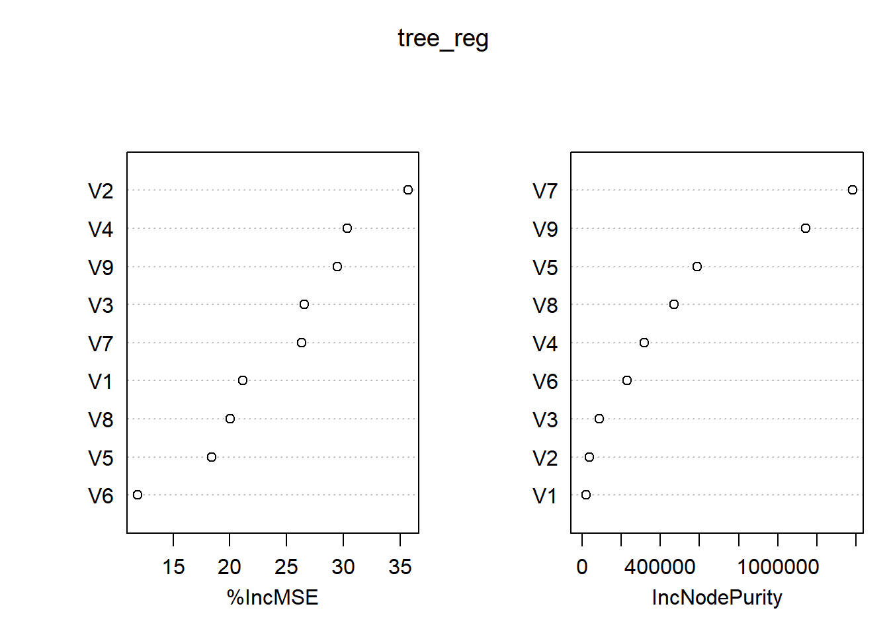
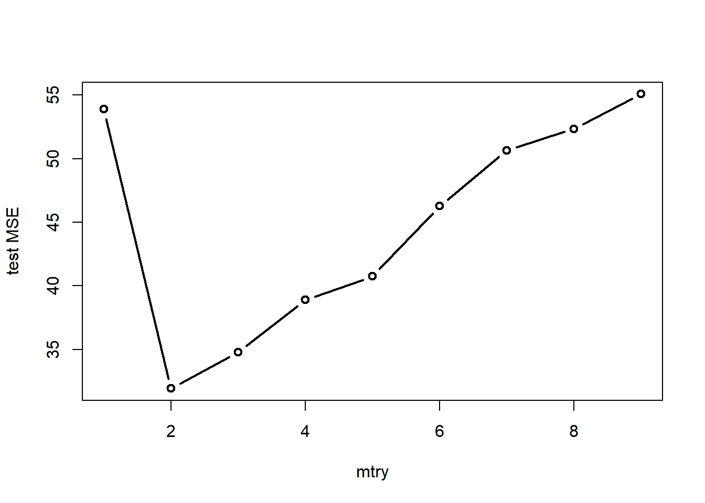

5.3 R实现
5.3.1 决策树
rpart包中的rpart()函数可以用来构建回归树和分类树。
树的形式为二叉树
rpart()参数formula
模型公式，看看谁是响应变量谁是预测变量。
data
数据框。
weights
设置权重。
subset
指示数据框中的哪些样本会被用于建模。
na.action
如何对待缺失值。默认使用
na.rpart()函数，即删除缺失响应变量的样本或者缺失所有预测变量的样本（缺失部分预测变量也会被保留）。method
可选值为
anova、poisson、class、exp。其中anova对应构建回归树，class对应构建分类树。model
是否在结果中保存模型框架。
感觉用不上
x
是否在结果中保存预测变量，默认为
FALSE。y
是否在结果中保存响应变量，默认为
TRUE。parms
添加到分裂函数中的额外参数。对于回归树而言，不用额外添加。对于分类树，可传入一个列表，列表中分为三个元素：
prior、loss、split，分别表示先验概率（正数，且总和需为1）、损失矩阵（规定了错分时的损失，要求对角线元素为0，非对角线元素为正）、划分标准（可选值为基尼系数gini、信息增益information）。control
为
rpart.control()函数以列表形式传入的参数。详情建议问ai，懒癌犯了0.0
cost
一个向量长度为预测变量数的非负向量，在拆分预测变量时用作缩放比例，默认为1。若该值越大，则对应预测变量的重要性程度越低。在量纲不一致的情形，该参数可用于减轻量纲带来的影响，因为算法会倾向于选择尺度较大的预测变量。
其余函数
rpart.control()可更为细致地控制决策树的生长逻辑，如设置结点的最小训练样本数。
prune()用于剪枝。
predict()用于预测。
rpart.plot包用于绘制决策树的结果，是对
plot.rpart()函数的拓展。
下面实战一下。
- 分类任务
写到这不想写了，太晚了，有时间在补充。
5.3.2 随机森林
randomForest包是R中专门用来构建随机森林模型的包。下面将详细介绍包中的核心函数randomForest()，并罗列其余函数的作用。
用途
该函数使用Breiman的随机森林算法进行回归与分类任务。
参数
x
存储预测变量的数据框或矩阵。
y
响应变量向量。若为因子型变量，则视为分类树，否则视为回归树。若为省略，则为无监督模式。
xtest
预测变量的测试集，为数据框或矩阵格式。
ytest
响应变量的测试集，向量格式。
ntree
决策树的数目，默认为500。
mtry
随机属性子集的大小。分类任务为属性总量的平方根，回归任务为属性总量三分之一。
weights
权重向量，在采样时为训练集中的不同观测点设置权重。
replace
是否为有放回抽样，默认为
TRUE。classwt
在分类任务中，设置类的先验概率。注意传入的是一个向量，向量的分量表示不同类别的比例，这些分量无须加总为1。
cutoff
在分类任务中，设置投票法的阈值，即超过多少比例才认为该观测点属于特定的一类。
strata
一个被用于分层抽样的因子型变量。
sampsize
样本容量。在分类任务中，若其为与
strata相同长度的向量，则表示不同层的样本容量。nodesize
表示叶结点位置的最小样本数，默认分类任务为1，回归任务为5。
maxnodes
表示叶结点的最大个数，若不指定，则决策树将会尽可能地生长。
importance
是否评估预测变量的重要性，默认为
FALSE。localImp
是否需要计算重要性度量，默认为
FALSE。若为TRUE，则会覆盖掉importance参数。该参数和
importance参数的区别貌似在于前者用于局部重要性度量，后者用于全局重要性度量。nPerm
在回归任务中，该参数用于评估变量重要性时对每棵树的袋外数据进行排列的次数。
proximity
是否计算观测点之间的相似度。
oob.prox
是否计算袋外数据观测点之间的相似度。
norm.votes
在分类任务中，若为
TRUE，则以比例形式展示最终的投票结果；若为FALSE，则展示原始票数。默认为TRUE。do.trace
是否在控制台输出详细的运行过程，默认为
FALSE。若为整数，则表示每构建多少棵树就输出一次详情。keep.forest
是否在输出结果中保留森林。若给定了
xtest，则默认为FALSE。corr.bias
在回归任务中，是否对回归结果进行偏差校正。
该参数是实验性的，风险自担。
keep.inbag
是否返回\(n \times ntree\)矩阵用以记录哪些观测点在哪棵树中被使用。
输出
call
模型的输入信息。
type
树的类别，回归任务还是分类任务还是无监督模式。
predicted
基于袋外样本的预测值。
importance
重要性度量矩阵，返回所有变量的平均下降精度、平均下降基尼系数或者平均下降MSE。
importanceSD
重要性度量的标准误矩阵。
localImp
局部重要性度量矩阵，返回变量对观测点重要性的度量。
ntree
决策树的数量。
mtry
每个结点上随机属性子集的大小。
forest
包含整个森林的列表。当
randomForest()处于无监督模式或者keep.forest为FALSE时为NULL值。err.rate
在分类任务中，第i棵树及之前所有树在袋外数据中的分类错误率。
confusion
在分类任务中，分类结果的混淆矩阵。
votes
在分类任务中，显示得票比例或者得票数。
oob.times
观测点归为袋外数据的次数。
proximity
接近度矩阵，根据观测点在同一结点出现的频率来计算观测点之间的相似性。
mse
回归任务中的均方误差。
rsq
伪R方，\(1-\frac{mse}{Var(y)}\)
test
若在输入中给出了测试集的数据，则在结果中会以列表形式存储关于测试集的有关结果。
randomForest包中的其余函数的作用如下表所示。
| 函数名 | 用途 |
|---|---|
| classCenter | 返回不同类别的原型 |
| combine | 将多个森林合并为一个大森林 |
| getTree | 从森林中提取一棵决策树 |
| grow | 为森林新添决策树 |
| importance | 提取变量重要性度量 |
| imports85 | 一个UCI机器学习数据集 |
| margin | 计算或绘制分类边界 |
| MDSplot | 绘制接近度矩阵的多维尺度图 |
| na.roughfix | 利用中位数或众数来估算缺失值 |
| outlier | 根据接近度矩阵计算离群点 |
| partialPlot | 绘制偏依赖图 |
| plot.randomForest | 绘制随机森林的分类错误率或者MSE |
| predict.randomForest | 用测试集进行预测 |
| treecv | 利用交叉验证法进行特征选择 |
| treeImpute | 利用接近度矩阵来估算自变量中的缺失值 |
| treeNews | 查看randomForest包的更新文件 |
| treesize | 查看每棵树的叶结点数或总结点数 |
| tunetree | 调优以寻找mtry的最优参数值 |
| varImpPlot | 可视化变量的重要性度量 |
| varUsed | 查看随机森林实际用到了哪些自变量 |
下面生成随机数据供随机森林进行模拟。
首先自定义函数，用于生成模拟数据。
# 自定义函数——生成多元正态数据
gen_data <- function(level, size, mu, sigma) {
# 初始化数据框
df = data.frame()
# 生成每个类别的数据
for (i in 1:level) {
# 生成类别标签
category_label = rep(LETTERS[i], size[i])
# 生成数据
category_data = as.data.frame(mvrnorm(n = size[i], mu = mu[[i]], Sigma = sigma[[i]]))
# 添加类别标签
category_data$category = factor(category_label)
# 将数据添加到数据框
df = rbind(df, category_data)
}
# 返回数据框
return(df)
}# 自定义函数——生成协方差矩阵
gen_sigma <- function(n) {
# 生成一个n x n的随机矩阵
L = matrix(runif(n * n, min = 1, max = 2), ncol = n)
diag(L) = abs(diag(L)) # 确保对角线上的元素为正
# 填充上三角部分为0
L[upper.tri(L)] = 0
# 计算Cholesky分解
A = L %*% t(L)
return(A)
}- 分类任务
这里生成具有3个水平的响应变量和9个预测变量。注意到不同类别之间的样本量存在一定的差异。
set.seed(123)
mu <- list(runif(9, min = 1, max = 4), runif(9, min = 1, max = 4), runif(9, min = 1,
max = 4))
sigma <- list(gen_sigma(9), gen_sigma(9), gen_sigma(9))
df_train <- gen_data(level = 3, size = c(100, 300, 600), mu = mu, sigma = sigma)
df_test <- gen_data(level = 3, size = c(30, 100, 180), mu = mu, sigma = sigma)接着运行模型。
tree_class <- randomForest(x = df_train[, -10], y = df_train$category, importance = T)
print(tree_class)##
## Call:
## randomForest(x = df_train[, -10], y = df_train$category, importance = T)
## Type of random forest: classification
## Number of trees: 500
## No. of variables tried at each split: 3
##
## OOB estimate of error rate: 16.2%
## Confusion matrix:
## A B C class.error
## A 34 35 31 0.66000000
## B 3 221 76 0.26333333
## C 0 17 583 0.02833333可以看到，袋外数据的分类错误率为16.2%。其中A类的分类错误率高达66%，这可能和训练集中的类别比例有关。
进一步地，绘制出分类错误率随决策树增加的变化趋势，可以更清晰地看到分类错误率的收敛情况。
plot(tree_class, col=c('black','red','blue','brown'),
lty=1, lwd=2, main='OOB err.rate')
legend('topright', legend=colnames(tree_class$err.rate),
col=c('black','red','blue','brown'),
lty=1, lwd=2)
图 5.1: 袋外数据的分类错误率
再来看看不同特征的重要程度。对于一棵树，在随机打乱某个特征的值的顺序之后，可以作差得到前后预测精度的下降情况，对于所有树取平均即可得到平均下降精度(MDA)。显然，如果MDA越大，说明该特征就越重要。同理，平均下降基尼系数(MDI)通过计算每个特征在所有树上节点分裂时导致的基尼系数平均下降量来评估特征的重要性。基尼系数反映了不纯度，下降得越多说明结点越容易从“不纯”走向了“纯”，意味着该特征在区分不同类别时能够较为显著地发挥作用。由图可知，两种评价准则得到的结果较为一致。

图 5.2: 分类_重要性度量
下面关注如何缓解类不平衡问题及如何选取最优参数mtry。
注意到训练集中类别的比例为1:3:6，存在一定程度的类不平衡问题。对此，在运行随机森林模型时可以设置classwt参数来设定各个类别的先验概率。
tree_class_prior <- randomForest(x = df_train[, -10], y = df_train$category, importance = T,
proximity = T, classwt = c(1, 3, 6))
print(tree_class_prior)##
## Call:
## randomForest(x = df_train[, -10], y = df_train$category, classwt = c(1, 3, 6), importance = T, proximity = T)
## Type of random forest: classification
## Number of trees: 500
## No. of variables tried at each split: 3
##
## OOB estimate of error rate: 15.8%
## Confusion matrix:
## A B C class.error
## A 32 37 31 0.68
## B 5 228 67 0.24
## C 0 18 582 0.03而对于参数mtry的选取，除了可以使用randomForest包自带的tunetree()函数进行调参，还可以自己写个循环，直接根据测试集来选取最优参数。
err.rate <- c(1:9)
for (i in 1:9) {
tree = randomForest(x = df_train[, -10], y = df_train$category, mtry = i)
fit_test = predict(tree, df_test[, -10])
err.rate[i] <- sum(fit_test != df_test$category)/nrow(df_test)
}
plot(1:9, err.rate, type = "b", lwd = 2, xlab = "mtry", ylab = "test err.rate")
图 5.3: 分类_mtry调优
由图可知，当mtry=3时，在测试集上的袋外数据分类错误率达到最小，为14.2%。
- 回归任务
这里首先生成自变量数据，然后在自变量的线性组合的基础上添加噪声，得到因变量数据。
set.seed(111)
mu <- list(runif(9, min = 1, max = 4))
sigma <- list(gen_sigma(9))
df_train <- gen_data(level = 1, size = c(1000), mu = mu, sigma = sigma)
df_train$epsilon <- rnorm(1000, sd = 3)
df_train <- df_train %>%
mutate(y = 2 * V1 + 3 * V2 + V3 + 4 * V4 + 3 * V5 + V6 + 2 * V7 + 3 * V8 + 4 *
V9 + epsilon)
df_test <- gen_data(level = 1, size = c(100), mu = mu, sigma = sigma)
df_test$epsilon <- rnorm(100, sd = 3)
df_test <- df_test %>%
mutate(y = 2 * V1 + 3 * V2 + V3 + 4 * V4 + 3 * V5 + V6 + 2 * V7 + 3 * V8 + 4 *
V9 + epsilon)接着直接运行模型。
##
## Call:
## randomForest(x = df_train[, 1:9], y = df_train$y, importance = T)
## Type of random forest: regression
## Number of trees: 500
## No. of variables tried at each split: 3
##
## Mean of squared residuals: 46.75519
## % Var explained: 98.91从结果中可以看到，均方误差为46.7551872，自变量能解释的变异程度为98.91%。
进一步地，下面给出了模型的袋外数据MSE。

图 5.4: 袋外数据MSE
再来看看特征的重要性度量。其中%IncMSE表示重排某个特征前后袋外数据MSE的上升百分比，上升的幅度越大，说明该特征对模型更加重要。IncNodePurity则表示结点分列时残差平方和的下降情况。

图 5.5: 回归_重要性度量
最后，给模型参数mtry调调优。
mse <- c(1:9)
for (i in 1:9) {
tree = randomForest(x = df_train[, 1:9], y = df_train$y, mtry = i)
fit_test = predict(tree, df_test[, 1:9])
mse[i] <- sum((fit_test - df_test$y)^2)/nrow(df_test)
}
plot(1:9, mse, type = "b", lwd = 2, xlab = "mtry", ylab = "test MSE")
图 5.6: 回归_mtry调优
由图可知，当mtry=2时，在测试集上的袋外数据MSE达到最小，为31.9。